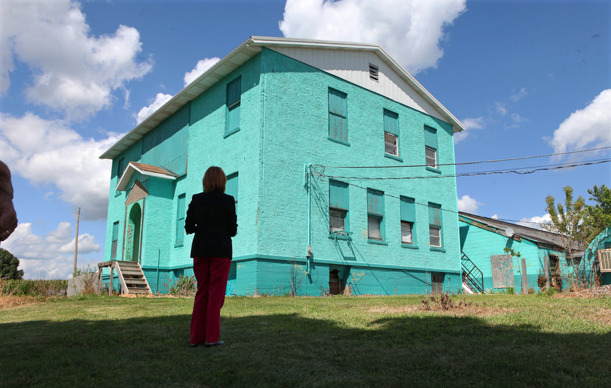

The Scene
A veteran social worker named Denise Gonzales drove past the winter-quiescent fields of 2009 to some town called Atalissa. She had to see for herself what subordinates were telling her.
She pulled uphill to an old schoolhouse, its turquoise exterior garish amid the sleeping acres of snow-dusted brown. She found an open door and stepped into a wonderland nightmare, with walls painted playhouse colors, floors speckled with roaches and the air rank with neglect.
From the squalid building's shadows emerged its residents, all men, extending hands in welcome, their long fingernails caked with dried blood. A few hands looked almost forked. "From pulling crop," they explained, a term that she soon learned referred to the yanking of craws from freshly killed turkeys.
You the boss lady? they asked, with grins of gaptoothed decay. You in charge of us now? A few led her on a tour past the soiled mattresses, the overloaded electrical outlets, the trash bins collecting the snow melt dripping from the ceiling - their home.
The schoolhouse was crime-scene crowded. Law enforcement investigators. Social workers. The nervous caretakers. A woman just up from Texas, identifying herself as a co-owner of Henry's Turkey Service and describing these "boys" as employees who were like family.
"Dressed to the nines," Ms. Gonzales recalls. "And right outside that room were these men needing medical attention, malnourished, with mice crawling in their rooms."
Two decades on the front lines of human frailty had not prepared her for this. But Ms. Gonzales suppressed her panic to focus on the names of these 21 Texans soon to be in her care. Gene. Willie. Henry. Frank. Keith. The Penner brothers, Billy and Robert. Others.
All the while, she kept thinking: How in God's name did they wind up here?